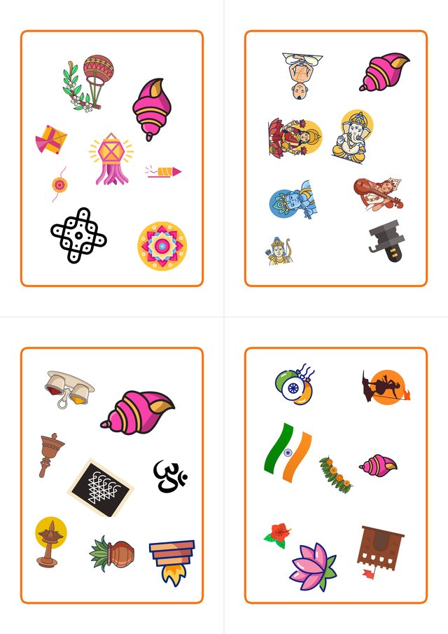

Ready to print
Rectangular cards
Easy to cut: straight lines with a paper trimmer or scissors. Four cards per page, 14 pages, 55 cards. The last spot on page 14 is blank.
Download
Free to download, in US Letter and A4. Print 14 pages, cut along the orange borders, and you have all 55 cards.

All 57 symbols with their names and what each one means, in Marathi or Hindi. Keep it next to the cards while you play.
Marathi US Letter PDF A4 PDF
Hindi US Letter PDF A4 PDF
We strongly recommend a high-quality print shop, so the symbols come out crisp and bright. Print all 14 pages in colour at 100% scale (not “fit to page”) on heavy card stock, about 200–300 gsm (65–110 lb cover).
Cut along the orange borders. A paper trimmer makes it quick.
Laminate or slip cards into sleeves so they survive many game nights.
A good print shop (for example Staples, FedEx Office or Office Depot) gives much sharper symbols than most home printers, and many will cut the cards for you too.